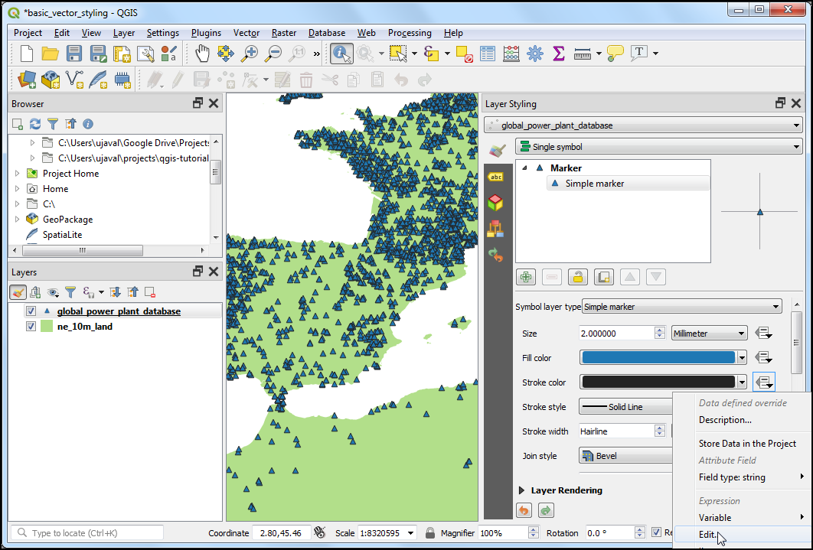
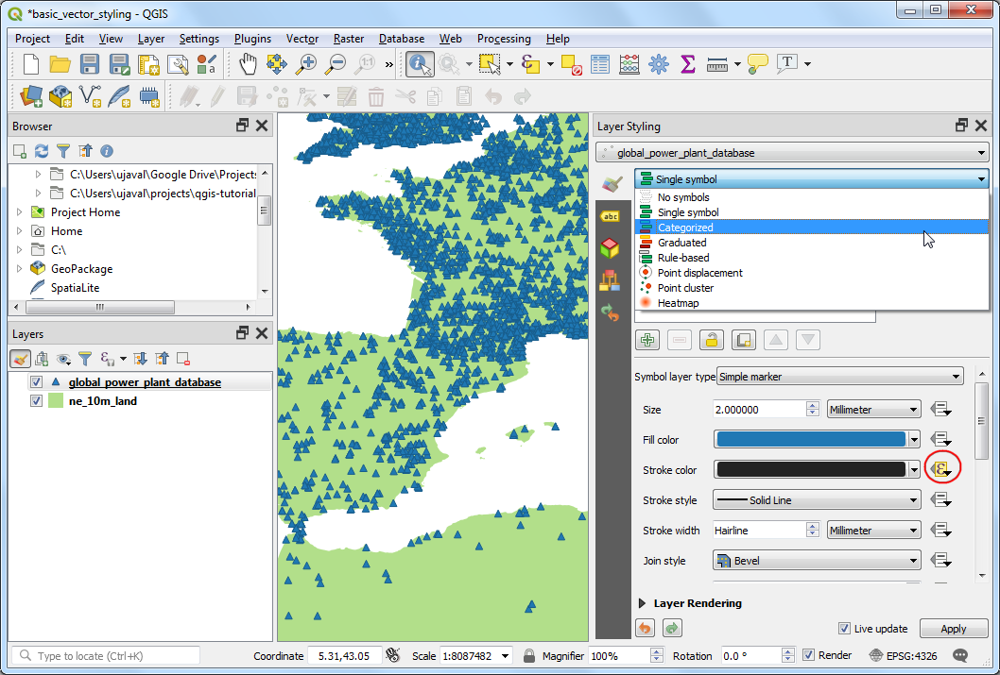
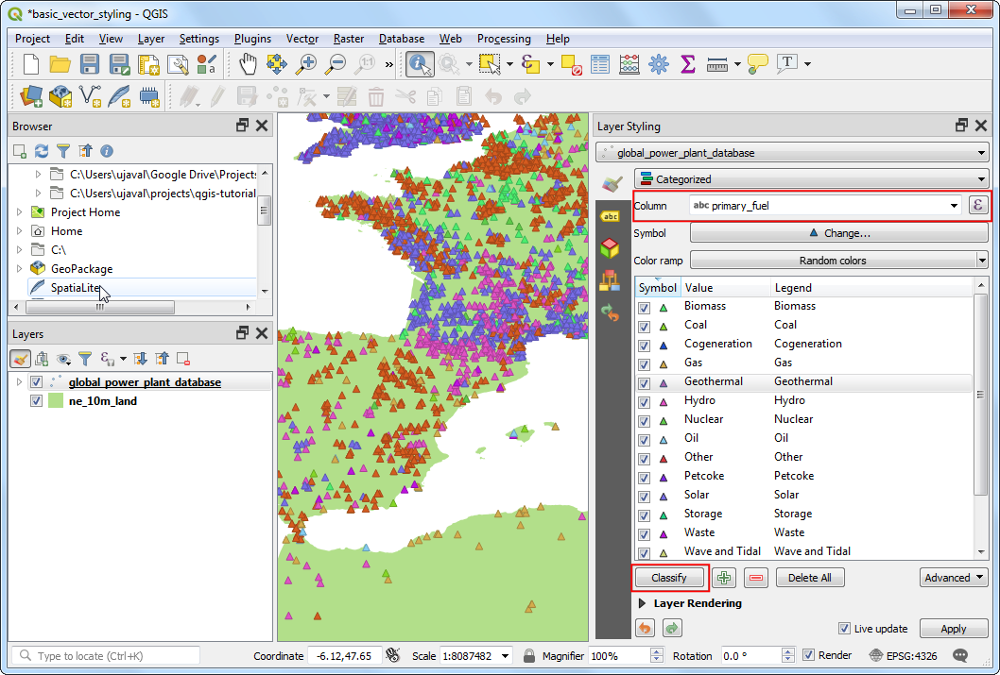
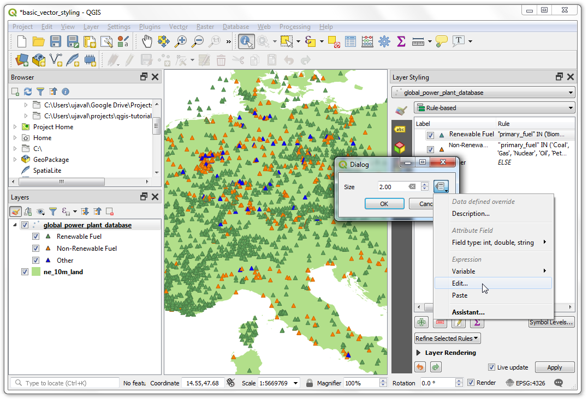

Ujaval Gandhi
Ujaval GandhiOsnovno stilizovanje vektora (QGIS3)¶
Da bi se kreirala mapa, potrebno je stilizovati GIS podatke i predstaviti ih u obliku koji je vizuelno informativan. U QGIS-u je dostupan veliki broj opcija za primenu različitih vrsta simbologije na osnovne podatke. U ovom tutorijalu, uzećemo tekstualnu datoteku i primeniti različite tehnike vizuelizacije podataka kako bismo istakli prostorne obrasce u podacima.
Pregled zadatka¶
Uzećemo CSV datoteku koja sadrži lokaciju svih elektrana na svetu i kreirati vizuelizaciju koja prikazuje distribuciju obnovljivih i neobnovljivih goriva koja se koriste u tim elektranama.
Druge veštine koje ćete naučiti¶
Koristite izraze za grupisanje više vrednosti atributa u jednu kategoriju
Dobijte podatke¶
Svetski institut za resurse je sastavio sveobuhvatnu bazu podataka otvorenog koda o elektranama širom sveta koja pokriva preko 30000 postrojenja. Preuzmite Globalnu bazu podataka o elektranama sa portala otvorenih podataka WRI-ja.
Natural Earth ima nekoliko globalnih vektorskih slojeva. Preuzmite 10m Physical Vectors - Land koji sadrži poligone Zemlje.
Radi lakšeg snalaženja, možete direktno preuzeti kopiju gornjih slojeva odozdo:
globalpowerplantdatabasev120.zip
Izvor podataka [WRI] [NATURALEARTH]
Procedura¶
Raspakujte oba skupa podataka u fasciklu na računaru. U QGIS panelu pregledača pronađite direktorijum u koji ste raspakovali podatke. Proširite fasciklu
ne_10m_landi izaberite slojne_10m_land.shp. Prevucite sloj na platno.

Dobićete novi sloj
ne_10m_landdodat na panel Slojevi. Globalna baza podataka elektrana dolazi kao CSV datoteka, tako da ćemo morati da je uvezemo. Kliknite na dugme Otvori menadžer izvora podataka na Traci sa alatkama za izvore podataka. Takođe možete koristiti prečicu na tastaturi Ctrl + L.

U prozoru Data Source Manager, pređite na karticu Delimited Text. Kliknite na dugme … pored File name i pregledajte direktorijum u koji ste raspakovali datoteku
globalpowerplantdatabasev120.zip. Izaberiteglobal_power_plant_database.csv. QGIS će automatski detektovati polja za razgraničivač i geometriju. Ostavite Geometry CRS na podrazumevanu vrednostEPSG:4326 - WGS84. Kliknite na Add, a zatim na Close.

Novi sloj
global_power_plant_databasebiće dodat na panel Layers i videćete tačke koje predstavljaju elektrane na platnu. Sada smo spremni da stilizujemo oba ova sloja. Kliknite na dugme Otvori panel za stilizovanje slojeva na vrhu panela Layers.

Panel Layer Styling će se otvoriti sa desne strane. Prvo izaberite sloj
ne_10m_land. Ovo će biti naš osnovni sloj kako bismo stilizovanje održali minimalističkim i ne bi odvlačilo pažnju. Kliknite naSimple Filli pomerite se nadole. IzaberiteFill Colorpo želji. Kliknite na padajući meni poredStroke Color` i izaberite ``Transparent Stroke. Ovo će podesiti obrise kopnenih poligona da budu transparentni. Videćete rezultat vašeg izbora odmah primenjen na sloj.

Zatim izaberite sloj „global_power_plant_database“. Kliknite na „Simple marker“ i pomerite se nadole. Izaberite trouglasti marker.

Pomerite se nagore i izaberite Boja popunjavanja po vašoj želji. Korisna kartografska tehnika je da izaberete malo tamniju verziju boje popunjavanja kao Boja linije. Umesto da pokušavate da je birate ručno, QGIS pruža izraz za precizniju kontrolu. Kliknite na dugme Prevazilaženje definisanih podataka i izaberite Uredi.

Unesite sledeći izraz da biste podesili boju na 30% tamniju nijansu od boje ispune i kliknite na OK.
darker(@symbol_color, 130)
Белешка
Imajte na umu da je ovaj izraz nezavisan od boje popunjavanja koju ste izabrali. Videćete da je ovo izuzetno korisno u sledećim koracima gde automatski podešava boju ivice na osnovu date boje popunjavanja.
Primetićete da je dugme Data defined override pored Stroke color postalo žuto - što ukazuje da je ovo svojstvo kontrolisano nadjačavanjem. Prikazivanje sloja elektrana jednim simbolom nije baš korisno. Ne prenosi mnogo informacija osim lokacija elektrana. Hajde da koristimo drugi renderer da bismo ga učinili korisnijim. Kliknite na padajući meni Symbology i izaberite renderer
Categorized.

Sloj „global_power_plant_database“ sadrži atribut koji označava primarno gorivo koje se koristi u svakoj elektrani. Možemo kreirati stil gde je svaka jedinstvena vrsta goriva prikazana u drugoj boji. Izaberite „primary_fuel“ kao Kolonu. Kliknite na Klasifikuj. Pojaviće se više kategorija i prikaz mape će se promeniti u skladu sa tim.

Iako je kategorizovani prikaz koristan, ovaj sloj sadrži previše kategorija da bi se mapa mogla smisleno interpretirati. Bolji pristup bi bio grupisati određene vrste kategorija goriva i smanjiti broj klasa. Hajde da pokušamo da napravimo 3 kategorije - Obnovljivo gorivo, Neobnovljivo gorivo i Ostalo. Izaberite renderer „zasnovan na pravilima“. Želimo da obrišemo sve kategorije osim gornje. Izaberite drugu kategoriju odozgo, držite pritisnut taster Shift i kliknite na donju kategoriju. Ovo će izabrati sve kategorije osim gornje. Kada je izaberete, kliknite na dugme Ukloni izabrana pravila da biste ih obrisali.

Izaberite preostalo pravilo i kliknite na Izmeni trenutno pravilo.
Unesite „Obnovljivo gorivo“ kao Oznaku. Kliknite na dugme Izraz pored Filter.

U dijalogu Kreator nizova izraza unesite sledeći izraz i kliknite na U redu. Ovde grupišemo više kategorija obnovljivih izvora energije u jednu kategoriju.
"primary_fuel" IN ('Biomass', 'Geothermal', 'Hydro', 'Solar', 'Wind', 'Storage', 'Wave and Tidal')
Белешка
Vrste goriva izabrane za kategorije obnovljivih i neobnovljivih izvora zasnovane su na `Vikipediji <https://en.wikipedia.org/wiki/Renewable_energy>>`_. Postoje alternativne definicije i klasifikacije koje se možda ne podudaraju sa onim što je ovde izabrano.
Pomerite se nadole i kliknite na Jednostavan marker. Izaberite odgovarajuću Boja popunjavanja. Kada završite, kliknite na dugme Nazad.

Videćete jedno pravilo koje se primenjuje na sloj za kategoriju Obnovljivo gorivo. Kliknite desnim tasterom miša na red i izaberite Kopiraj. Ponovo kliknite desnim tasterom miša i izaberite Nalepi.

Kopija postojećeg pravila će biti dodata. Izaberite novododati red i kliknite na Izmeni trenutno pravilo.

Unesite „Neobnovljivo gorivo“ kao Oznaku. Kliknite na dugme Izraz pored Filter.

U dijalogu Kreator nizova izraza unesite sledeći izraz i kliknite na U redu.
"primary_fuel" IN ('Coal', 'Gas', 'Nuclear', 'Oil', 'Petcoke')
Pomerite se nadole i kliknite na Jednostavan marker. Izaberite odgovarajuću Boja popunjavanja. Kada završite, kliknite na dugme Nazad.

Ponovite postupak kopiranja/lepljenja da biste dodali treće pravilo. Izaberite ga i kliknite na Izmeni trenutno pravilo.

Unesite „Ostalo“ kao Oznaku. Izaberite Inače - Uhvati sve za ostale funkcije umesto Filter. Ovo će osigurati da će svaka kategorija propuštena u prethodna 2 pravila biti stilizovana ovim pravilom. Pomerite se nadole i kliknite na Jednostavan marker. Izaberite odgovarajuću Boju popunjavanja. Kada završite, kliknite na dugme Nazad.

Rekategorizacija je sada završena. Videćete mnogo jasniji prikaz koji prikazuje distribuciju obnovljivih u odnosu na neobnovljive izvore goriva koje koriste elektrane i njihovu distribuciju po zemljama. Međutim, ovo ne daje potpunu sliku. Možemo dodati još jednu promenljivu stilu. Umesto da prikazujemo sve markere jedinstvene veličine, možemo prikazati veličine proporcionalne kapacitetu proizvodnje električne energije svake elektrane. Ova tehnika kartografije se naziva Multivarijantno mapiranje. Kliknite desnim tasterom miša na pravilo „Obnovljivo gorivo“ i izaberite Promeni veličinu.

Kliknite na dugme Data defined override pored Size. Izaberite Edit.

Pošto se kapacitet proizvodnje električne energije značajno razlikuje u našem skupu podataka, efikasan način da se dobije mali raspon veličine je korišćenje funkcije „log10“. Možete eksperimentisati sa različitim izrazima da biste pronašli ono što najbolje funkcioniše za vašu željenu vizuelizaciju. Unesite sledeći izraz i kliknite na OK.
log10("capacity_mw") + 1
Ponovite isti postupak za ostala pravila.

Kada budete zadovoljni, možete zatvoriti panel za stilizovanje slojeva.

Gledajući našu konačnu vizuelizaciju, odmah možete videti obrasce u skupu podataka. Na primer, širom Evrope postoji više elektrana koje koriste obnovljive izvore energije, ali su manjeg kapaciteta od elektrana koje koriste neobnovljive izvore energije.

If you want to give feedback or share your experience with this tutorial, please comment below. (requires GitHub account)